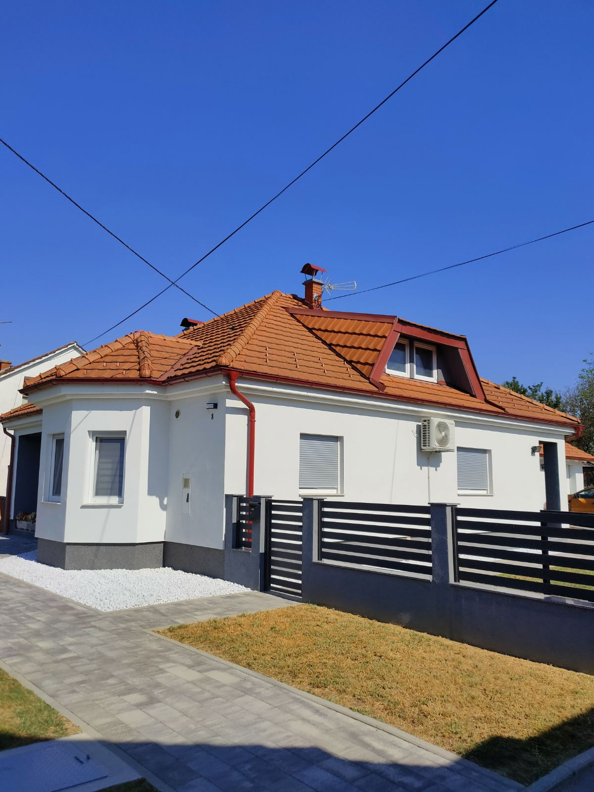

Osnovni podaci
Happy Place — Vaš mali dio svemira!
Prodajemo novu, potpuno uređenu i namještenu obiteljsku kuću površine 134 m² bruto, modernog i funkcionalnog rasporeda, smještenu svega 8 km od centra Virovitice, u srcu općine Špišić Bukovica. Kuća se nalazi na parceli od 1.630 m².
Kuća se prodaje po principu „ključ u ruke“ – s namještajem i opremom, bez potrebe za dodatnim ulaganjima. Kvalitetno je izolirana od temelja do krova, klimatizirana, opremljena podnim grijanjem i pametnom rekuperacijom, dok su kuća, pomoćne prostorije i kompletna okućnica završeni i ograđeni te uređeni asfaltom, tlakavcima i zelenim površinama.
Dokumentacija je uredna, nekretnina je bez tereta te je moguća kupnja putem stambenog kredita.
U kući živimo nešto više od četiri godine, tijekom kojih smo je dodatno uređivali i opremali. Kuću prodajemo zbog stila života i želje za životom u stanu.